Subsections
Introduction
This chapter outlines the basics of
computational stereo including
the geometry of stereo systems, discusses the ill-posedness of
stereo matching problems, and considers the most popular constraints
used to regularise the problem.
Computational stereo vision is an active
research domain in computer
vision. A large number of important applications such as surveying
and mapping, engineering, architecture, autonomous navigation or
vision-guided robotics involve quantitative measurements of
coordinates of 3D points from a stereopair or multiple images of a
3D scene obtained from different
viewpoints [2,3,4]. Stereo vision is
used also
in geology, forensics, biology (e.g. growth monitoring), biometrics
(e.g. 3D facial models), bioengineering and many other application
areas.
These 3D measurements are based on stereo
matching that pursues the
goal of finding points in stereo images depicting the same observed
scene points. The corresponding image points are searched for by
estimating similarity between image signals (grey values or colours)
under admissible geometric and photometric distortions of stereo
images. Generally, reconstruction from stereo pairs is an ill-posed
inverse optical problem because the same stereo pair can be produced
by many different optical surfaces due to homogeneous (uniform or
repetitive) textures, partial occlusions and signal distortions.
Occlusions result in image areas with no stereo correspondence in
another images, and texture homogeneity yields multiple equivalent
correspondences.
In principle, an ill-posed vision problem
has to be regularised in
order to obtain a solution; in the case of computational stereo
vision the regularisation has to bring the solution close to human
visual perception [5,6]. However, at
present, the best
strategies for regularising stereo algorithms with respect to all
the sources of ill-posedness is still not clear.
Basics of Computational Binocular Stereo
Binocular stereo vision reconstructs a 3D
model of an observed scene
from a pair of 2D images capturing the scene from different
directions. The reconstruction consists of determining 3D
coordinates of all binocularly visible scene points using
back-projection or triangulation. All the 3D (spatial) points along
a ray through the camera's centre of projection to a particular
image point are projected to that image point. Triangulation
exploits the fact that each location observed by the two cameras
produces a unique pair of image points in these cameras.
Figure ![[*]](crossref.png) illustrates triangulation geometry. Let O
and O
be the centres of projection
of two pinhole cameras. Let P and P
denote positions of the two points in the image planes that
represent the same point, P. P
is the intersection
of the back projected rays
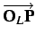and
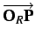.
This triangulation
localises each binocularly visible point represented by the two
corresponding image points in a stereopair, provided the
corresponding image points P and P
associated with the same point P can be determined.
However, to establish correct correspondences between two (or more)
stereo images is a very difficult task. Computational stereo
matching aims to find the correspondences under constraints on
expected 3D scenes and assumptions about admissible geometric and
photometric deviations of stereo images.
illustrates triangulation geometry. Let O
and O
be the centres of projection
of two pinhole cameras. Let P and P
denote positions of the two points in the image planes that
represent the same point, P. P
is the intersection
of the back projected rays
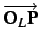and
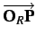.
This triangulation
localises each binocularly visible point represented by the two
corresponding image points in a stereopair, provided the
corresponding image points P and P
associated with the same point P can be determined.
However, to establish correct correspondences between two (or more)
stereo images is a very difficult task. Computational stereo
matching aims to find the correspondences under constraints on
expected 3D scenes and assumptions about admissible geometric and
photometric deviations of stereo images.
For example, an epipolar geometry in
Figure
constrains
and thus accelerates the search for corresponding image points.
Given a point, P,
in the left image, the search area
for the corresponding point, P, in the right image
is
significantly reduced by the epipolar constraint. Instead of the
whole right image, this area is restricted to the intersection of
the right image plane with the epipolar
plane (OOP).
The epipolar
plane contains the baseline passing through the projection centres, O
and O,
and intersecting each image
plane in a point called the epipole. Each epipole represents the
projection centre of another image. If the image plane is parallel
to the baseline, the corresponding epipole is located at infinity
along that line. Each epipolar plane intersects both images along
epipolar lines, and corresponding image points are located along the
associated epipolar lines.
Figure:
Epipolar geometry of a stereo pair.
|
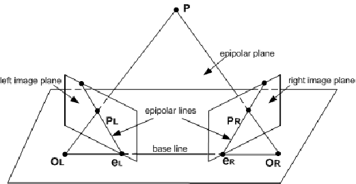
|
Generally, each pair of corresponding image
points has different 2D -
and -coordinates
in the left and right images,
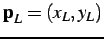and
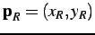.
In the most common binocular stereo geometry, the
associated epipolar lines are image rows with the same -coordinate,
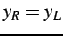.
This geometry assumes two identical
cameras with the same focal length, parallel optical axes and a
baseline parallel to the image planes. Given the geometry of a
stereo system (the projection centres and relationships between the
3D and 2D image coordinates), all the binocularly visible points
with known corresponding image locations
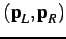may
be reconstructed by
triangulation. Stereo correspondence is typically specified for each
location, 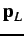, in the
left image as the coordinate
differences, called disparities, or parallaxes, of the corresponding
point in the right image, 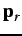. Generally,
the
disparity is a vector
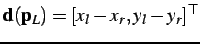
of - and -disparities.
A disparity map, d,
contains the disparity vectors for all
the left image points having corresponding points in the right
image. For the parallel stereo geometry, the -disparity is always
zero, and a disparity map may contain only the scalar -disparities
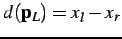.
Figure
illustrates a simple binocular stereo system
with parallel optical axes. The baseline of length, , is
perpendicular to the optical axes, coincides with the 3D 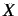-axis
and is parallel to the -axis
in the images. The focal lengths of
the cameras are equal to  .
The world -axis
coincides with the
optical axis of the left camera. In order to reconstruct the world
coordinates, 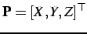,
from the disparity map
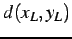, the camera geometry
parameters, the focal length
and the baseline ,
must be exactly known. Then, the 3D
coordinates for the corresponding pair
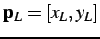
and
.
The world -axis
coincides with the
optical axis of the left camera. In order to reconstruct the world
coordinates, 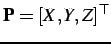,
from the disparity map
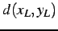, the camera geometry
parameters, the focal length
and the baseline ,
must be exactly known. Then, the 3D
coordinates for the corresponding pair
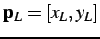
and ![$ \mathbf{p}_{R}=[x_{R}, y_{R}]$](img26.png) are:
are:
Figure:
Standard
geometry of a binocular stereo system.
|
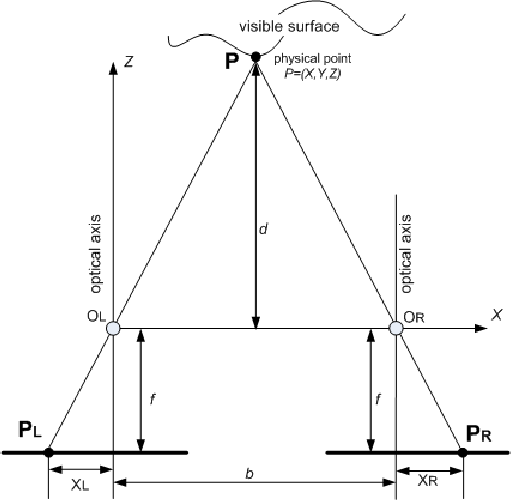
|
According to the configuration in
Figure ,
all the
observed 3D points can be specified with a vector-valued function,
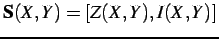,
of the planar scene
coordinates 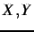.
The first component represents the depth value, ,
of the 3D point with planar position, 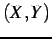, and the second
component represents the optical signal (intensity or colour)
attributed to the point 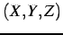.
The stereo images are specified
with functions 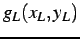
and 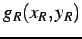
representing intensities or colours in the image points. Although
most typical stereo systems are horizontal, with the left and right
cameras displaced along the -axis,
in the general case the
baseline can be oriented arbitrarily with respect to the 3D
coordinate frame. Thus below, the numerical indices 1 and 2 instead
of the letters 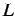
and 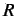 are used to
distinguish between the
stereo channels.
Stereo Correspondence Problem
Accurate stereo matching to solve the stereo
correspondence problem
is a key step towards the accurate 3D reconstruction. However, this
matching problem is ill-posed and has to be properly regularised to
resolve ambiguous solutions [5,6]. The ambiguities
have
various sources. Even if the scene was a single continuous and
visible everywhere surface, matching would remain ambiguous due to
image noise caused by cameras and imaging conditions in particular,
low signal-to-noise ratio in poorly textured regions, spatially
variant and different signal transfer factors in the two stereo
channels, and structural ambiguity. Some of these ambiguities could
be resolved by using many different views of the same 3D point. This
research focuses on only binocular stereo matching and does not
consider multiple view stereo problems. In the binocular case,
stereo matching is much less capable for reducing structural
ambiguity in homogeneous areas yielding many equivalent ``best"
correspondences between the images. Here, homogeneity means either
uniform (i.e. very small signal deviations) or repetitive of closely
similar signal groups. In addition, photometric distortions make
each projected intensity, 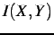 of a point, differ in the
corresponding points, i.e.
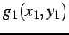
and
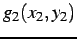may differ due to mutual
spatially variant
contrast and offset deviations between the corresponding areas.
Simultaneously, these areas have geometrical distortions - due to
projective distortions depending on the surface variations 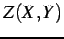
- and stereo matching has to take account of these differences.
Also, viewing the same scene by the two
mutually displaced cameras
results in different visibility conditions: while most of the 3D
points are visible to the both cameras - binocularly visible
points (BVP) -, some points are occluded by other parts of a scene
from one. These monocularly visible points (MVP) appear only in one
image of a pair, and therefore have no stereo correspondence at all.
A few examples of occlusions are presented in Figure .
Two kinds of surface discontinuities in a scene result in large
disparity ``jumps", when a thin foreground object appears in front
of distant background or conversely a small hole existing at the
foreground surface allows us to see the distant background.
Detection and accurate recognition of occlusions is very important
because incidental correspondences found for such regions may
completely compromise the 3D reconstruction.
Figure:
Variants of partial occlusions
(Red Colour Regions): (a) due to a thin foreground object;
(b) due
to small foreground hole; (c) due to surface
discontinuity.
| 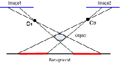 |
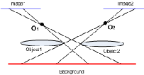 |
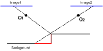 |
| (a) |
(b) |
(c) |
|
Regularisation of stereo matching involves
not only detection of
likely occlusions, but also a number of physically justified
constraints on observed 3D surfaces and image correspondences. The
constraints can reduce false matches and guide the matching process.
In particular, the epipolar
constraint (see
Section ) reduces a 2D search space to 1D
search along epipolar lines because for any point P
in one stereo image, the corresponding point P
lies
on the associated epipolar line. The epipolar constraint can be
reliably applied only after the geometry of the system is known and
a series of corresponding epipolar lines in both stereo images is
estimated.
Two other constraints, uniqueness
and continuity,
first pointed out by Marr and Poggio in 1976 [7] restrict
the matching conditions. Uniqueness means that a pixel from one
image has only one corresponding pixel in another image. This
constraint holds for opaque surfaces, but fails if partially
transparent surfaces are present in the scene. The continuity
constraint follows from an assumption that a visible surface, and
therefore the disparity of corresponding points, varies smoothly
almost everywhere over the scene. In the presence of multiple
visible surfaces with discontinuities caused by abrupt disparity
jumps, this constraint is invalid.
The ordering constraint
holds for a single opaque surface
and states that the corresponding points along each pair of the
associated epipolar lines have the same order. In other words, if a
point, 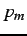,
is to the left of the point, 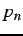, in an epipolar
line across one image, then the corresponding point,
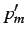,
is to the left of the point, 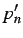,
respectively, in the
associated epipolar line across the second image. This constraint
well-known in conventional photogrammetry led to dynamic programming
based approaches to stereo matching, by Gimel'farb in
1972 [8]
and Baker and Binford in 1981 [9].
The ordering constraint fails for multiple discontinuous surfaces,
e.g. for thin foreground objects in front of a distant background (
see e.g. Figure ,a).
The compatibility
constraint [10]
used in the
majority of known approaches to intensity-based stereo matching
states that either the corresponding pixels have closely similar
intensity values or the corresponding image windows have high
cross-correlation values. The former assumption fails under
photometric distortions of stereo images, e.g. under spatially
variant or invariant contrast and offset deviations. The latter
assumption fails under spatially varying pixel disparities, partial
occlusions, and spatially variant contrast and offset deviations.
After discussing commonly used stereo
matching approaches, this
thesis proposes an alternative approach called Noise-driven Concurrent
Stereo
Matching (NCSM) that overcomes, to some extent, the drawbacks of the
more conventional algorithms. Chapter
presents
an overview of the conventional algorithms and formulates a new NCSM
framework based on accurate modelling and estimation of image noise.
Chapter
considers the main sources of noise in
stereo images and discusses in detail the proposed noise-driven
NCSM, including different ways of noise estimation, noise-based image
segmentation, selection of candidate 3D volumes of admissible stereo
matching, and fitting 2D surfaces to the volumes.
Chapter
presents experimental results
obtained for several stereo pairs with known ground truths using NCSM
and more conventional stereo matching techniques including the best
performing at present graph minimum-cut and belief propagation based
algorithms. Finally, Chapter summarises
results presented in the thesis and discusses directions of future
research.
The work presented in this thesis has been
reported in
publications [11,12,13,14,15,16,17,18].
One paper [15]
received the Second
Best Paper
Award of the Fourth Mexican
International Conference on Artificial
Intelligence (MICAI). Monterrey, Mexico Novermber 14-18, 2005, and
another [17]
received the Best
Paper Award
of Image and Vision Computing New Zealand (IVCNZ) 2005 conference.